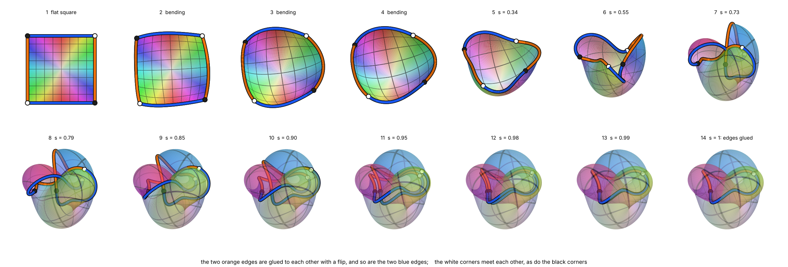

From a square to Boy’s surface
How a flat square, with its opposite edges glued with a flip, closes up into Boy’s surface: an immersion of the real projective plane ℝP² in ℝ³.

Animated version: projective-plane-sequence.webp.
Single frames: stages/.

What the pictures show
- The square. ℝP² is the square [−1, 1]² with each boundary point glued to the point opposite it through the centre, so opposite edges are glued with a flip. The two orange edges are glued to each other, as are the two blue edges. The white corners become one point, and so do the black corners.
- Stages 1–4, bending. The square bends into the small central cap of the surface. Fong’s elliptical map takes the square onto the unit disk. It sends opposite boundary points of the square to opposite points of the circle, so the gluing rule carries over unchanged.
- Stages 5–14, growing. Each frame is the image of the parameter disk of radius s under the Bryant–Kusner parametrization (classic member, c = ½), so every frame is a genuine piece of Boy’s surface. Only at s = 1 do opposite boundary points coincide: the two orange edges then run along the same closed curve, as do the two blue edges, and each pair of corners meets in a single point.
- Colours. Hue is twice the polar angle in the disk, so opposite points start with the same colour and the colouring stays continuous on the finished surface. The grid is the square’s 8 × 8 grid, carried along by the map.
The surface passes through itself: ℝP² has no embedding in ℝ³, only immersions. From stage 5 onward the surface becomes semi-transparent so the self-intersections and the hidden edges stay visible.
Regenerating
python projective_plane_sequence.py keys [out_dir] # strip + stage_01..14.png
python projective_plane_sequence.py anim [out_dir] # animated WebPThis is a standalone educational script; it needs numpy,
matplotlib and pillow, which are not project
dependencies. Stage times, edge width, transparency and camera path are
set near the top and in the keys branch. It does not touch
the game engine, the topology resolver, or any runtime contract.